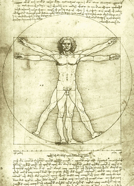

Ma formation
- Formation découverte des métiers numériques
CEFIM - Tours | février – mai 2019 - Apprenez à créer votre site web avec HTML5 et CSS3
openclassrooms.com | avril 2019 - Formation VISA trois en un, Français langue étrangère
AFPP - Tours | novembre 2018 – février 2019 - Génie électrique
Université Centrale du Venezuela | 1998 – 2006 - Cours d'autoprotection et de sécurité des citoyens
Defensa Civil Aragua - Venezuela | 1999 - Cap électricité et électronique analogique
Unité professionnel le d'enseignement technologique Venezuela | 1997 - BAC scientifique
Lycée San José - Guatire, Venezuela | 1997
Mon expérience
- Stage chez Creatis'web | Avril 2019
- Chef d'entreprise Athenor,
dans le domaine du bien-être :
bains de vapeur vers la purification de l’Être humain, Venezuela | De 2011 à 2017 - Commerçant indépendant, vente d'articles autour du bien-être, Venezuela | De 2002 à 2011
- Animateur dans les colonies de vacances, Iguanas Campamentos, Venezuela | De 2001 à 2003
Mes compétences
- Connaissance des bases de la programmation
- Initiation aux langages: Javascript, Python, Wolfram Language, Blockly,
HTML et CSS - Connaitre et utiliser la ligne de commande sous Windows (batch)
- Création de pages Web avec WIX
- Installer un OS (système d’explotation) Windows et Raspbian
- Créer des visuels avec Canva (cartes de visite et logos)
Centres d'intérêts
Je suis intéressé à connaître le fonctionnement réel de l'être humain
